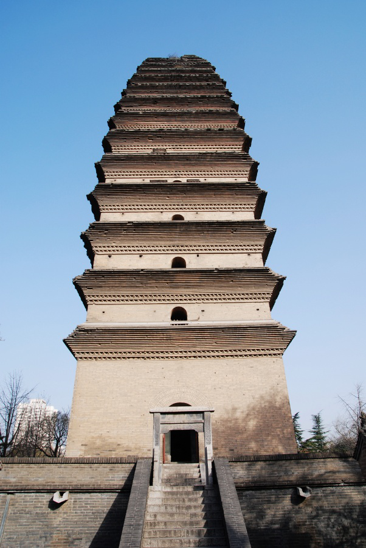

小雁塔，位于唐长安城安仁坊（今陕西省西安市南郊）荐福寺内，又称“荐福寺塔”，建于唐景龙年间，与大雁塔同为唐长安城保留至今的重要标志。小雁塔和荐福寺钟楼内的古钟合称为“关中八景”之一的“雁塔晨钟”，是西安博物院的组成部分，为国家AAAA级旅游景区。
小雁塔是中国早期方形密檐式砖塔的典型作品，原有15层，现存13层，高43.4米，塔形秀丽，是唐代佛教建筑艺术遗产，佛教传入中原地区并融入汉族文化的标志性建筑。
1961年3月4日，小雁塔被国务院公布为第一批全国重点文物保护单位。2014年6月22日，在卡塔尔多哈召开的联合国教科文组织第38届世界遗产委员会会议上，小雁塔作为中国、哈萨克斯坦和吉尔吉斯斯坦三国联合申遗的“丝绸之路：长安-天山廊道的路网”中的一处遗址点成功列入《世界遗产名录》